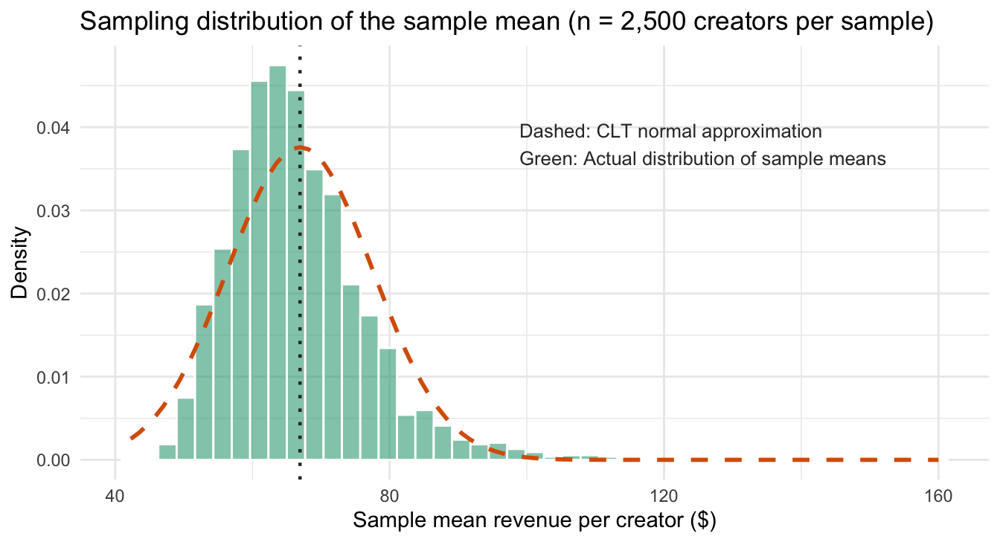
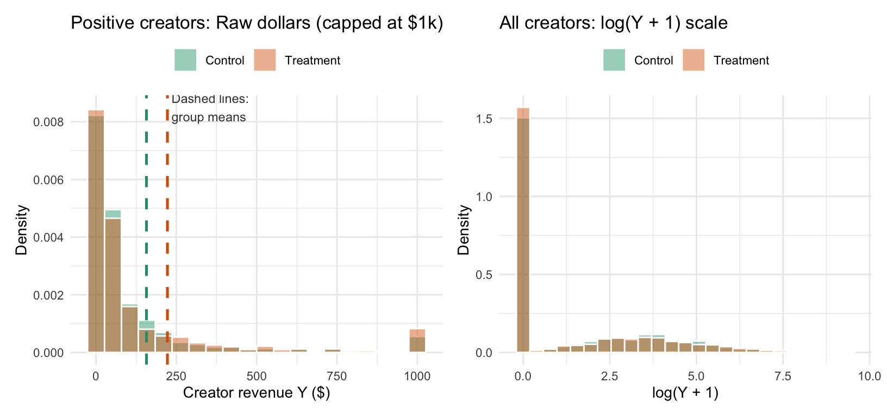
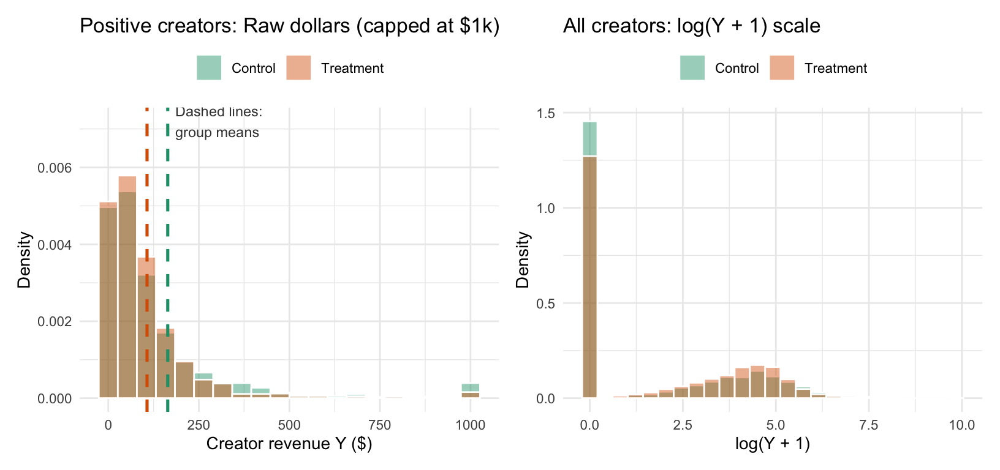
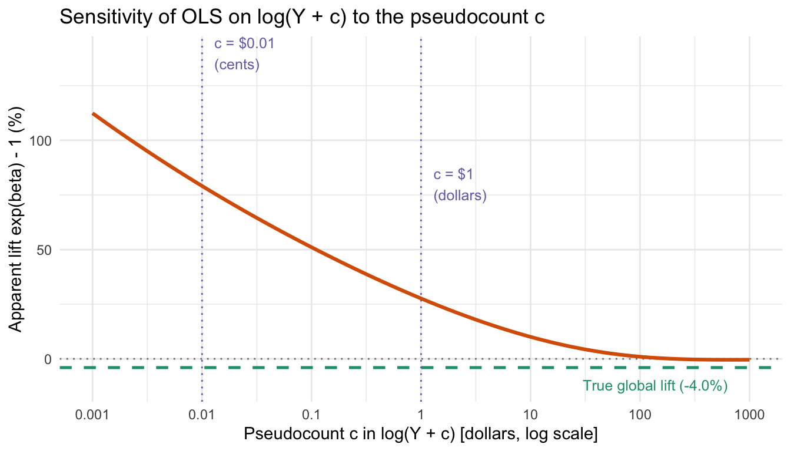

Log-transforming the outcome vs. using a log-link GLM in skewed creator experiments
In A/B tests on content creators, revenue is zero-inflated and heavily skewed. Why we can’t just compare group means—and what changes when we replace log(Y + 1) OLS with a GLM.
statistics
experimentation
r
Published
November 18, 2026
At the dayjob, we run online experiments on units that earn money by allowing ads on their content. Depending on the sample we use for the experiment, that revenue can be very heavy-tailed, with “whale” units dominating the revenue earned on the platform. And since this is not complicated enough, many units don’t make any money at all. You can impress your data science interviewer by calling this a zero-inflated right-skewed distribution. Needless to say, this makes online experiments much harder to carry out when the purpose of the treatment is to increase the revenue: almost every assumption usually made by experiment platforms breaks down.
Because of this, many analysts recommend log-transforming the outcome in such experiments, possibly adding a small constant to avoid taking the log of 01. But this practice, of which I’ve been a champion for several years, has come under scrutiny. The main problem with log-transforming the outcome is that you’re not estimating what you think you’re estimating anymore, except under very special conditions.
I’m now convinced that Generalized Linear Models, or GLMs, offer a compelling alternative to log-transforming the outcome. This post is a brain dump of my main findings.
The what margins?
A treatment \(T\) can either pull a non-monetizing creator into the pool of monetizing creators, or increase the revenue of existing creators. We assume that monetizing creators cannot become non-monetizing. Our economist friends have terms for these two effects: the extensive margin and the intensive margin:2
The extensive margin (a lift on the probability of monetizing): Each creator either earns strictly positive revenue (is_pos, i.e., \(Y > 0\)) or earns nothing (\(Y = 0\)). In Control, a creator monetizes with probability \(p_0 = \Pr(Y > 0 \mid \neg T)\); in Treatment, that probability scales by a multiplicative factor \(\theta_{\text{ext}}\), so \(p_1 = \Pr(Y > 0 \mid T) = \theta_{\text{ext}} \, p_0\).
The intensive margin (a constant multiplicative effect on positive revenue): Conditional on a creator monetizing (\(Y > 0\)), the treatment multiplies the creator’s expected revenue by a constant factor \(\theta_{\text{int}}\): \[
E[Y \mid Y > 0, T] = \theta_{\text{int}} \, E[Y \mid Y > 0, \neg T].
\]
Under these two assumptions, expected revenue per creator across the entire treated population (including the zeros) is \(E[Y \mid T] = \Pr(Y > 0 \mid T) \times E[Y \mid Y > 0, T]\). The global, platform-wide relative effect on total revenue is therefore the product of the two margins:
You might ask, why don’t we just compare the plain sample means \(\bar{Y}_1\) and \(\bar{Y}_0\) with the good old two-sample \(t\)-test?
First of all because we’re assuming the impact on earnings to be multiplicative, as in treatment \(T\) increases revenue by \(X\%\). But if that doesn’t bother you there’s another caveat, which is that the t-test assumes the sample mean to be normally distributed. This might be the case for a large number of creators, but when the revenue skew is large enough your sample mean will still not be normal enough.
There’s also the problem that we’ve assumed the revenue distribution to be very skewed in the first place, meaning the variance of the outcome metric is itself very high. This will impact your statistical power.
(There’s also a subtler weighting inefficiency discussed in Appendix A.)3
More formally:
Whale-lottery variance destroys statistical power (Type II error): The variance of a sample mean is \(\operatorname{Var}(\bar{Y}) = \sigma^2 / n\). Because squared deviations \((Y_i - \mu)^2\) enter \(\sigma^2\), a single whale earning $50,000 contributes \(1{,}000^2 = 1{,}000{,}000\times\) as much variance to \(\bar{Y}\) as a creator earning $50. Whichever arm happens by random chance to draw one or two extra mega-creators will have a much larger sample mean, easily swamping a genuine 15% treatment effect across the other 99.9% of creators.
Slow Central Limit Theorem convergence (the Berry–Esseen bound): Welch’s \(t\)-test relies on the Central Limit Theorem (CLT): as sample size \(n \to \infty\), the sample mean \(\bar{Y}\) converges in distribution to a normal \(\mathcal{N}(\mu, \sigma^2 / n)\), even when individual observations \(Y_i\) are skewed. However, the Berry–Esseen theorem shows that the speed of this convergence is inversely proportional to the skewness (specifically the standardized third absolute moment \(\rho / \sigma^3 = E[|Y_i - \mu|^3] / \sigma^3\)) divided by \(\sqrt{n}\).4 For heavy-tailed creator revenue, \(\rho / \sigma^3\) is so large that even with \(n = 2{,}500\) creators per arm, the sampling distribution of \(\bar{Y}\) remains noticeably right-skewed rather than normal.
We can visualize the Berry–Esseen problem directly before running our experiment simulation. Below, we draw 2,000 independent samples of \(n = 2{,}500\) creators from the Control revenue distribution (60% zeros, 40% \(\operatorname{LogNormal}(\mu = 3.5, \sigma = 1.8)\), which has a true population mean of \(\mu = \$66.93\) and theoretical standard error \(\sigma / \sqrt{n} = \$10.61\)) and plot the distribution of the 2,000 sample means \(\bar{Y}\) against the theoretical CLT normal bell curve:
Code
suppressPackageStartupMessages({library(dplyr)library(ggplot2)library(patchwork)library(skimr)})set.seed(20261111)n_arm <-2500p_pos_ctrl <-0.40mu_log_ctrl <-3.5sd_log_ctrl <-1.8# Exact population mean and SE(Y_bar) for zero-inflated LogNormal(3.5, 1.8^2)true_ey <- p_pos_ctrl *exp(mu_log_ctrl + sd_log_ctrl^2/2)true_ey2 <- p_pos_ctrl *exp(2* mu_log_ctrl +2* sd_log_ctrl^2)true_se <-sqrt((true_ey2 - true_ey^2) / n_arm)sample_means_df <-tibble(y_bar =replicate(2000, { is_pos <-runif(n_arm) < p_pos_ctrlmean(ifelse(is_pos, rlnorm(n_arm, meanlog = mu_log_ctrl, sdlog = sd_log_ctrl), 0)) }))ggplot(sample_means_df, aes(x = y_bar)) +geom_histogram(aes(y =after_stat(density)), bins =45, fill ="#1b9e77", alpha =0.55, color ="white") +stat_function(fun = dnorm, args =list(mean = true_ey, sd = true_se),linetype ="dashed", linewidth =1, color ="#d95f02" ) +geom_vline(xintercept = true_ey, color ="gray20", linetype ="dotted", linewidth =0.8) +annotate("text", x = true_ey +32, y =0.038,label ="Dashed: CLT normal approximation\nGreen: Actual distribution of sample means",hjust =0, size =3.4, color ="gray20" ) +labs(title ="Sampling distribution of the sample mean (n = 2,500 creators per sample)",x ="Sample mean revenue per creator ($)",y ="Density" ) +theme_minimal(base_size =11)

Figure 1: Distribution of the sample mean across 2,000 independent samples of n = 2,500 creators, compared against the asymptotic Central Limit Theorem normal approximation N(66.93, 10.61^2). Even at n = 2,500, occasional mega-whales pull the sample mean into a long right tail (skewness = 1.37).
Even when averaging \(2{,}500\) creators per arm, the sample mean \(\bar{Y}\) is visibly lopsided (skewness \(\approx 1.37\)), with individual sample means ranging from $45 to over $160 depending on whether a sample happened to draw a mega-whale. This makes the traditional t-test borderline applicable here.
Simulation 1: A pure +15% intensive-margin lift
Now let’s see how these problems affect an A/B test and how we can remedy them. Here is what the simulation below will do:
Generate one synthetic experiment (\(N = 5{,}000\) creators): We assign 2,500 creators to Control and 2,500 to Treatment. To isolate the whale-variance problem first, we hold the extensive margin fixed at \(\theta_{\text{ext}} = 1\): in both arms, each creator has a 40% probability of monetizing (\(\Pr(Y > 0) = 0.40\), leaving 60% of creators at $0). Among monetizing creators, Control revenue follows \(\operatorname{LogNormal}(\mu = 3.5, \sigma = 1.8)\) (median \(\approx \$33\), mean \(\approx \$167\)). Treatment multiplies every active creator’s revenue by \(\theta_{\text{int}} = 1.15\) (+15% lift).
Plot the revenue distributions for the two groups: We plot the Control and Treatment revenue distributions side by side—first on the raw dollar scale (for positive creators, capped at $1,000 so the histogram bars are visible), and second on the \(\log(Y + 1)\) scale across all creators.
Repeat the experiment 500 times to compare four estimators: In each of 500 Monte Carlo repetitions, we compare:
The raw group means (\(\bar{Y}_1 / \bar{Y}_0 - 1\), with \(p\)-value from Welch’s \(t\)-test),
An unadjusted Quasi-Poisson GLM with a log link (glm(y ~ in_treatment, family = quasipoisson(link = "log"))),5
OLS on \(\log(Y + 1)\) across all creators (lm(log1p(y) ~ in_treatment)), and
OLS on \(\log(Y)\) restricted to the positive creators (lm(log(y) ~ in_treatment, subset = is_pos)).
Next, let’s plot the distribution of revenue for the two groups in this experiment:
Code
cap <-1000means_sim1_pos <- sim1_df |>filter(is_pos) |>group_by(arm) |>summarize(mean_y =mean(y), max_y =max(y), .groups ="drop")p1_raw <- sim1_df |>filter(is_pos) |>mutate(y_capped =pmin(y, cap)) |>ggplot(aes(x = y_capped, fill = arm)) +geom_histogram(aes(y =after_stat(density)), bins =20, position ="identity", alpha =0.45, color ="white") +geom_vline(data = means_sim1_pos, aes(xintercept = mean_y, color = arm), linetype ="dashed", linewidth =0.9, show.legend =FALSE) +annotate("text", x =235, y =0.0085, label ="Dashed lines:\ngroup means", hjust =0, size =3.1, color ="gray25") +scale_fill_manual(values =c("Control"="#1b9e77", "Treatment"="#d95f02")) +scale_color_manual(values =c("Control"="#1b9e77", "Treatment"="#d95f02")) +labs(title ="Positive creators: Raw dollars (capped at $1k)",x ="Creator revenue Y ($)",y ="Density",fill =NULL ) +theme_minimal(base_size =10.5) +theme(legend.position ="top")p1_log <-ggplot(sim1_df, aes(x = log1p_y, fill = arm)) +geom_histogram(aes(y =after_stat(density)), bins =25, position ="identity", alpha =0.45, color ="white") +scale_fill_manual(values =c("Control"="#1b9e77", "Treatment"="#d95f02")) +labs(title ="All creators: log(Y + 1) scale",x ="log(Y + 1)",y ="Density",fill =NULL ) +theme_minimal(base_size =10.5) +theme(legend.position ="top")p1_raw + p1_log

Figure 2: Simulated creator revenue in Control vs. Treatment (N = 5,000 creators, true +15% intensive-margin lift, no extensive-margin change). Left: raw dollar distribution among positive creators (capped at $1,000 for visibility, though extreme whales reach over $11,000); vertical dashed lines mark the sample mean of positive creators in each group ($174 in Control vs. $209 in Treatment). Right: log(Y + 1) distribution across all creators, showing the 60% spike at zero alongside the shifted log-normal body.
On the raw dollar scale (left panel, where the vertical dashed lines mark each group’s mean positive revenue), almost all positive creators are crowded near the origin while a handful of whales stretch out into the thousands of dollars (we had to cap the axis at $1,000 just to make the bars visible). On the \(\log(Y + 1)\) scale (right panel), the extreme right tail is compressed into a clean bell curve where Treatment is slightly shifted to the right of Control—but 60% of both groups sit in a massive spike at \(\log(0 + 1) = 0\).
Now let’s run the 500-experiment Monte Carlo simulation to see how our four estimators perform across repeated samples:
Code
set.seed(20261111)simulate_homogeneous_lift <-function(n =5000, p_pos =0.4, mu_log =3.5, sd_log =1.8, lift =0.15) { in_treatment <-rep(c(FALSE, TRUE), each = n /2) is_pos <-runif(n) < p_pos y <-ifelse( is_pos,rlnorm(n, meanlog = mu_log, sdlog = sd_log) *ifelse(in_treatment, 1+ lift, 1),0 )# 1. Raw difference in means (Welch t-test & ratio of means) p_raw <-t.test(y ~ in_treatment)$p.value raw_lift_hat <-mean(y[in_treatment]) /mean(y[!in_treatment]) -1# 2. Unadjusted Quasi-Poisson GLM (log link) fit_qp <-glm(y ~ in_treatment, family =quasipoisson(link ="log")) p_qp <-summary(fit_qp)$coefficients["in_treatmentTRUE", "Pr(>|t|)"] qp_lift_hat <-exp(coef(fit_qp)[["in_treatmentTRUE"]]) -1# 3. OLS on log(Y + 1) across all creators fit_log1p <-lm(log1p(y) ~ in_treatment) p_log1p <-summary(fit_log1p)$coefficients["in_treatmentTRUE", "Pr(>|t|)"] log1p_lift_hat <-exp(coef(fit_log1p)[["in_treatmentTRUE"]]) -1# 4. OLS on log(Y) among positive creators (part 2 of a hurdle model) fit_pos_log <-lm(log(y) ~ in_treatment, subset = is_pos) p_pos_log <-summary(fit_pos_log)$coefficients["in_treatmentTRUE", "Pr(>|t|)"] pos_log_lift_hat <-exp(coef(fit_pos_log)[["in_treatmentTRUE"]]) -1c(raw_lift_hat = raw_lift_hat,qp_lift_hat = qp_lift_hat,log1p_lift_hat = log1p_lift_hat,pos_log_lift_hat = pos_log_lift_hat,sig_raw = p_raw <0.05,sig_qp = p_qp <0.05,sig_log1p = p_log1p <0.05,sig_pos_log = p_pos_log <0.05 )}reps <-replicate(500, simulate_homogeneous_lift())summary_homog <-data.frame(Method =c("Raw group means (Welch t-test / ratio)","Quasi-Poisson GLM (log link, unadjusted)","OLS on log(Y + 1) (all creators)","OLS on log(Y) (positive creators only)" ),Mean_Estimated_Lift =c(mean(reps["raw_lift_hat", ]),mean(reps["qp_lift_hat", ]),mean(reps["log1p_lift_hat", ]),mean(reps["pos_log_lift_hat", ]) ),SD_Across_Experiments =c(sd(reps["raw_lift_hat", ]),sd(reps["qp_lift_hat", ]),sd(reps["log1p_lift_hat", ]),sd(reps["pos_log_lift_hat", ]) ),Power_at_5pct =c(mean(reps["sig_raw", ]),mean(reps["sig_qp", ]),mean(reps["sig_log1p", ]),mean(reps["sig_pos_log", ]) ))knitr::kable(summary_homog, digits =3)
Method
Mean_Estimated_Lift
SD_Across_Experiments
Power_at_5pct
Raw group means (Welch t-test / ratio)
0.166
0.234
0.108
Quasi-Poisson GLM (log link, unadjusted)
0.166
0.234
0.122
OLS on log(Y + 1) (all creators)
0.053
0.063
0.140
OLS on log(Y) (positive creators only)
0.150
0.093
0.386
Look closely at the four rows of this table:
Raw group means and unadjusted Quasi-Poisson GLM produce the exact same mean estimate (0.166) and the exact same standard deviation (0.234) across all 500 experiments, achieving a dismal 10.8%–12.2% statistical power for a true 15% lift. It can be shown that an unadjusted log-link GLM is literally the ratio of sample means \(\bar{Y}_1 / \bar{Y}_0\) in disguise, so it suffers from the exact same whale problem.
OLS on \(\log(Y + 1)\) across all creators slashes the standard deviation across experiments from 23.4 to 6.3 percentage points—but\(\exp(\hat{\beta}) - 1\) averages only +5.3% instead of +15.0% because 60% of the observations are pinned at \(\log(0 + 1) = 0\). That severe attenuation bias cancels out the variance reduction, leaving power stuck at 14.0%.
OLS on \(\log(Y)\) among the positive creators recovers the true +15% lift (0.150) with less than half the standard error (0.093) of the raw mean ratio, more than tripling statistical power to 38.6%.
Why \(\log(Y + 1)\) and a log-link GLM diverge: three mechanisms
When we replace \(Y\) with \(\log(Y + c)\) in OLS versus fitting a GLM with \(\log E[Y \mid T] = \alpha + \beta T\), three distinct mechanisms come into play.
Mechanism 1: A mental model for \(E[\log Y]\) (“log first, then average”) vs. \(\log E[Y]\) (“pool the dollars first, then take the log”)
Everyone has a clear intuition for \(E[\log Y]\): you take the logarithm of each individual creator’s revenue, and then average those logs across creators. Think of the log of the revenue as just another way to count revenue. But what does the reverse order of operations—\(\log E[Y]\), the log of the expected value—actually mean?
The easiest way to wrap your head around \(\log E[Y \mid T]\) is to ignore the logarithm at first:
Step 1 (Pool the dollars into the group average \(E[Y \mid T]\)): In each arm, add up all the raw dollars earned by all creators (including the $0 creators and the whales) and divide by the number of creators \(n\). That gives the ordinary arithmetic mean revenue per creator: \(\mu_0 = E[Y \mid \neg T]\) in Control and \(\mu_1 = E[Y \mid T]\) in Treatment. Notice that no individual observation is ever logged, which is why creators with \(Y_i = 0\) cause zero mathematical difficulty: they simply contribute $0 to the group pot.
Step 2 (Express the ratio of the two group pots on a log scale): Suppose Control averages \(\mu_0 = \$100\) per creator and Treatment averages \(\mu_1 = \$115\) per creator (+15% total revenue). Instead of modeling the additive dollar difference \(\mu_1 - \mu_0 = +\$15\), a log-link GLM \(\log E[Y \mid T] = \alpha + \beta T\) models the ratio of the two group averages via \(\beta\): \[
\beta = \log E[Y \mid T] - \log E[Y \mid \neg T] = \log\left(\frac{E[Y \mid T]}{E[Y \mid \neg T]}\right) = \log\left(\frac{115}{100}\right) \quad \Longleftrightarrow \quad E[Y \mid T] = E[Y \mid \neg T] \cdot e^\beta.
\] In short, \(\log E[Y \mid T]\) is nothing more than a reparameterization of the ordinary group average \(\mu_T\) so that regression coefficients multiply the average dollar pot instead of adding to it. We’ve seen this movie before, in logistic regression where the log of odds is modeled as a linear combination of the predictors.
Now compare that with \(E[\log Y \mid T]\), where the logarithm happens before averaging across creators. Because the average of the logs is the log of the geometric mean (\(\overline{\log y} = \frac{1}{m}\sum_{i=1}^m \log y_i = \log \left(\prod_{i=1}^m y_i\right)^{1/m} = \log \operatorname{GM}(y)\)),6 fitting OLS of \(\log Y\) on \(T\) estimates the log-ratio of geometric means:
\[
\underbrace{\Delta E[\log Y \mid T] = \log \frac{\operatorname{GM}(Y \mid T)}{\operatorname{GM}(Y \mid \neg T)}}_{\text{"Log each creator first, then average"}}
\quad \neq \quad
\underbrace{\Delta \log E[Y \mid T] = \log \frac{E[Y \mid T]}{E[Y \mid \neg T]}}_{\text{"Pool the dollars first, then take the log"}}.
\]
A tiny three-creator example shows why the two orders of operations can move in opposite directions:
In Control, three creators earn $10, $100, and $1,000.
In Treatment, suppose the feature helps small and mid-tier creators grow to $20, $200, and $600 (while the top whale dips from $1,000 to $600):
Geometric mean (\(\exp(E[\log Y])\)): \((20 \times 200 \times 600)^{1/3} \approx \mathbf{\$133.90}\) (+33.9% lift via OLS on \(\log Y\), because two creators doubled while one fell by 40%).
Arithmetic mean (\(E[Y]\)): \((20 + 200 + 600) / 3 \approx \mathbf{\$273.33}\) (\(-26.1\%\) drop via a log-link GLM, because total platform dollars fell from $1,110 to $820).
Mathematically, because \(\log(\cdot)\) is strictly concave, Jensen’s inequality guarantees that \(E[\log Y] < \log E[Y]\) whenever \(Y\) varies across creators. For \(\operatorname{LogNormal}(\mu_t, \sigma_t^2)\),
The two estimands coincide only when the log-scale dispersion \(\sigma_t^2\) is identical across arms and subgroups (\(\sigma_1^2 = \sigma_0^2\)).
Mechanism 2: Why \(\log(Y + c)\) can yield almost any number when extensive and intensive margins move in opposite directions
When creators can earn $0, \(\log(Y)\) is undefined, so practitioners compute \(\log(Y + c)\) for some positive constant \(c > 0\) (typically \(c = 1\)). Let’s write down the exact expected value of \(\log(Y + c)\) to see why this creates a mathematical disaster whenever both margins are active.
Let \(p_0 = \Pr(Y > 0 \mid \neg T)\) and \(p_1 = \Pr(Y > 0 \mid T)\) be the monetization probabilities in Control and Treatment. By the law of total expectation, an observation is either \(Y = 0\) (with probability \(1 - p_t\), yielding \(\log(0 + c) = \log c\)) or \(Y > 0\) (with probability \(p_t\)):
\[
E[\log(Y + c) \mid T = t] = (1 - p_t) \log c + p_t E[\log(Y + c) \mid Y > 0, T = t].
\]
When \(c\) is small relative to typical positive creator revenue (\(Y \gg c\) among monetizing creators), \(\log(Y + c) \approx \log Y\) on the positive observations. Writing \(\mu_t = E[\log Y \mid Y > 0, T = t]\) for the mean log-revenue of active creators in arm \(t\), we can rearrange the expression above as:
\[
E[\log(Y + c) \mid T = t] \approx \log c + p_t (\mu_t - \log c).
\]
Subtracting Control (\(t = 0\)) from Treatment (\(t = 1\)) gives the population OLS slope \(\beta(c)\) from regressing \(\log(Y + c)\) on \(T\):
Under our two structural assumptions, \(\mu_1 - \mu_0 = \log \theta_{\text{int}}\) and \(\Delta p = p_1 - p_0\), so:
\[
\beta(c) \approx \Delta p \cdot (\mu_0 - \log c) + p_1 \log \theta_{\text{int}}.
\]
Notice three immediate consequences of this formula:
Why attenuation happened in Simulation 1 (\(\Delta p = 0\)): When the treatment does not change the probability of monetizing (\(p_1 = p_0 = 0.40\)), the first term vanishes and \(\beta(c) \approx p_1 \log \theta_{\text{int}} = 0.40 \times \log(1.15) \approx 0.056\). That is why OLS on \(\log(Y + 1)\) estimated a +5.3% lift instead of +15%: the 60% of zeros diluted the slope by a factor of \(p_1 = 0.40\)!
Why \(-\log c\) acts as an arbitrary multiplier on the extensive margin (\(\Delta p \neq 0\)): Whenever the treatment changes the fraction of monetizing creators (\(\Delta p \neq 0\)), \(\beta(c)\) is a linear function of \(-\log c\) with slope \(\Delta p\). Every creator who crosses from \(Y = 0\) to \(Y > 0\) jumps from \(\log c\) to roughly \(\mu_0\), a log-scale leap of size \(\mu_0 - \log c\).
Why opposing margins can produce any number (positive, zero, or negative): Suppose the treatment helps more creators start monetizing (\(\Delta p > 0\), positive extensive margin) while reducing average revenue per active creator (\(\log \theta_{\text{int}} < 0\), negative intensive margin).
If you choose a tiny pseudocount \(c \to 0^+\) (or measure revenue in cents or tenths of a cent), \(-\log c \to +\infty\), so the positive term \(\Delta p \cdot (\mu_0 - \log c)\) grows arbitrarily large and \(\beta(c)\) becomes as large and positive as you like.
If you choose a large \(c\) (or measure revenue in thousands of dollars), \(\log(Y + c) - \log c = \log(1 + Y/c) \approx Y/c\), so OLS on \(\log(Y + c)\) converges to a rescaled difference in raw dollar means and takes the sign of the net dollar effect.
By the Intermediate Value Theorem, as \(c\) varies from small to large, \(\beta(c)\) sweeps continuously from \(+\infty\) through zero to negative values! Changing the unit of currency from dollars (\(c = 1\)) to cents (\(c = 0.01\)) is enough to completely change the magnitude—or even flip the sign—of your conclusion.
Mechanism 3: An unadjusted log-link GLM suffers from the exact same whale problem as raw means
A GLM with a log link models the conditional expectation directly:
Because it logs the expectation rather than individual observations, creators with \(Y_i = 0\) require no pseudocount \(c\), and we can estimate \(\beta\) by quasi-likelihood (or pseudo-maximum likelihood) without assuming that continuous dollar revenue literally follows a Poisson distribution.7
However, there is a crucial catch when you fit an unadjusted GLM—one whose only predictor is the binary treatment indicator \(T_i\), with no creator-level covariates. As we discuss in Appendix B, for any variance function \(V(\mu)\) (whether Quasi-Poisson, Tweedie, or Gamma),8 the unadjusted log-link GLM point estimate is algebraically identical to the ratio of raw sample means:
In other words, switching from \(\log(Y + 1)\) OLS to an unadjusted log-link GLM simply trades pseudocount bias for the exact same whale-variance problem as comparing raw group means. To actually tame the whales in a GLM, \(\mu_i\) must vary across creators using pre-experiment baseline covariates!
A better model: a Two-Part Hurdle GLM
Once we see why comparing raw means (or an unadjusted GLM) is too noisy and why \(\log(Y + 1)\) distorts the estimand, the remedy follows fairly immediately. We’ll decompose the extensive and intensive margins with a Two-Part (Hurdle) Model:9
Because Part 2 conditions on is_pos (\(Y > 0\)), there are no zeros in Part 2, and we can control for pre-experiment whale variance by conditioning Part 2 on each creator’s pre-experiment monetization status (is_pos_pre) and conditional log-revenue (log_y_pre = ifelse(is_pos_pre, log(y_pre), 0)).10
Simulation 2: Persistent monetization and opposing margins
Let’s put all of these pieces together in a second simulation where monetization is persistent from the pre-period into the experiment period, and the extensive and intensive margins move in opposite directions.
What this simulation will do
Simulate \(N = 10{,}000\) creators across a pre-experiment period and an experiment period:
Pre-experiment period: Before the experiment begins, 35% of creators are already monetizing (\(\Pr(\text{is\_pos\_pre}) = 0.35\)). Established monetizing creators span a wide heavy tail of baseline expected revenues \(\mu_i \sim \operatorname{LogNormal}(\mu_{\log} = 4.0, \sigma_{\log} = 1.4)\) (population mean \(\bar{\mu} = \exp(4.0 + 1.4^2/2) \approx \$145.47\)), and their observed pre-experiment revenue \(Y_{i,\text{pre}}\) is drawn with overdispersed Poisson variance \(\operatorname{Var}(Y_{i,\text{pre}} \mid \mu_i) = \phi \mu_i\) (\(\phi = 3.0\)). The remaining 65% of creators are not yet monetizing (!is_pos_pre) and have \(Y_{i,\text{pre}} = 0\).
Persistent monetization in the experiment period (the extensive margin): A creator who was already monetizing in the pre-period cannot become un-monetizing: \(\Pr(\text{is\_pos} \mid \text{is\_pos\_pre}) = 1\) in both arms. Among the 65% of creators who were not monetizing in the pre-period (!is_pos_pre), \(5/65 \approx 7.7\%\) convert to monetizing in Control (bringing total Control monetization to \(p_0 = 0.35 + 0.05 = 0.40\)), while Treatment lifts new conversions to \(13/65 = 20.0\%\) (bringing total Treatment monetization to \(p_1 = 0.35 + 0.13 = 0.48\), a +20% extensive-margin lift, \(\theta_{\text{ext}} = 0.48 / 0.40 = 1.20\)). Newly monetizing creators have expected baseline revenue \(\mu_i \sim \operatorname{LogNormal}(\log \bar{\mu} - 0.5^2/2, \, 0.5^2)\) with the same dollar mean \(\bar{\mu}\) but smaller log-spread.
Positive revenue in the experiment period (the intensive margin): Conditional on monetizing (is_pos), Treatment reduces expected revenue by \(-20\%\) on the intensive margin (\(\theta_{\text{int}} = 0.80\)), with realized revenue drawn around \(\mu_{i,\text{post}} = \mu_i \theta_{\text{int}}^{T_i}\) with variance \(\phi \mu_{i,\text{post}}\).
Define the true target estimand: The global, platform-wide relative impact on total revenue—the ratio of expected total revenue in Treatment vs. Control, \(\frac{E[Y \mid T]}{E[Y \mid \neg T]} - 1\)—is: \[
\theta_{\text{total}} - 1 = \theta_{\text{ext}} \times \theta_{\text{int}} - 1 = \frac{0.48}{0.40} \times 0.80 - 1 = 1.20 \times 0.80 - 1 = -4.0\%.
\] Note that this \(-4.0\%\) is the ratio of population means (the percentage change in the total dollar pot across all creators), not the average of individual creator post-over-pre ratios \(E[Y_{i,\text{post}} / Y_{i,\text{pre}} - 1]\). As shown in earlier posts on Jensen’s inequality for ratios and pooled CTR lifts, individual post-over-pre ratios are undefined (\(Y_{i,\text{post}} / 0\)) for every newly monetizing creator who had \(Y_{i,\text{pre}} = 0\).
Compare all estimators in a single experiment and across 300 repeated experiments: We compare naive \(\text{OLS on } \log(Y + c)\) (in dollars and cents), an unadjusted Quasi-Poisson GLM, and Two-Part Hurdle models using either \(\log(Y)\) OLS or Quasi-Poisson GLM in Part 2 (with and without pre-experiment covariate adjustment).
Let’s plot the revenue distribution for the two groups in this second simulation:
Code
cap2 <-1000means_sim2_pos <- sim2_df |>filter(is_pos) |>group_by(arm) |>summarize(mean_y =mean(y), .groups ="drop")p2_raw <- sim2_df |>filter(is_pos) |>mutate(y_capped =pmin(y, cap2)) |>ggplot(aes(x = y_capped, fill = arm)) +geom_histogram(aes(y =after_stat(density)), bins =20, position ="identity", alpha =0.45, color ="white") +geom_vline(data = means_sim2_pos, aes(xintercept = mean_y, color = arm), linetype ="dashed", linewidth =0.9, show.legend =FALSE) +annotate("text", x =185, y =0.0072, label ="Dashed lines:\ngroup means", hjust =0, size =3.1, color ="gray25") +scale_fill_manual(values =c("Control"="#1b9e77", "Treatment"="#d95f02")) +scale_color_manual(values =c("Control"="#1b9e77", "Treatment"="#d95f02")) +labs(title ="Positive creators: Raw dollars (capped at $1k)",x ="Creator revenue Y ($)",y ="Density",fill =NULL ) +theme_minimal(base_size =10.5) +theme(legend.position ="top")p2_log <-ggplot(sim2_df, aes(x = log1p_y, fill = arm)) +geom_histogram(aes(y =after_stat(density)), bins =25, position ="identity", alpha =0.45, color ="white") +scale_fill_manual(values =c("Control"="#1b9e77", "Treatment"="#d95f02")) +labs(title ="All creators: log(Y + 1) scale",x ="log(Y + 1)",y ="Density",fill =NULL ) +theme_minimal(base_size =10.5) +theme(legend.position ="top")p2_raw + p2_log

Figure 3: Simulated creator revenue in Simulation 2 (N = 10,000 creators: +20% extensive lift on P(Y > 0), -20% intensive lift on Y | Y > 0, net -4.0% total revenue change). Left: positive creator revenue in raw dollars (capped at $1,000); vertical dashed lines mark the sample mean of positive creators in each group ($158 in Control vs. $102 in Treatment). Right: log(Y + 1) across all creators, where Treatment has a smaller zero spike (52% vs. 60%) and a surge of newly monetized creators around log(Y + 1) ≈ 4.8.
Look at the two panels together: in the left-hand panel, the vertical dashed lines show that mean revenue among positive creators fell in Treatment (from $158 in Control to $102 in Treatment). Yet in the right-hand panel (log(Y + 1)), 8% of all creators moved out of the spike at \(0\) and into the positive distribution around \(\log(Y + 1) \approx 4.8\)—dragging the overall sample average of \(\log(Y + 1)\) sharply upward!
Now let’s compare all six estimators on this single experiment and across 300 repeated experiments:
Code
estimate_sim2 <-function(df) {# 1. Naive OLS on log(Y + c) fit_log_dollars <-lm(log(y +1) ~ in_treatment, data = df) fit_log_cents <-lm(log(100* y +1) ~ in_treatment, data = df)# 2. Unadjusted Quasi-Poisson GLM (log link) across all creators fit_glm_qp <-glm(y ~ in_treatment, data = df, family =quasipoisson(link ="log"))# 3. Two-Part (Hurdle) models:# Part 1: Extensive margin lift P(Y > 0 | T) / P(Y > 0 | !T) p_hat_0 <-mean(df$is_pos[!df$in_treatment]) p_hat_1 <-mean(df$is_pos[df$in_treatment]) ext_ratio <- p_hat_1 / p_hat_0# Part 2a: Unadjusted Quasi-Poisson GLM on positive creators (Y > 0) fit_part2_qp_unadj <-glm(y ~ in_treatment, data = df, family =quasipoisson(link ="log"), subset = is_pos)# Part 2b: Unadjusted OLS on log(Y) among positive creators (Y > 0) fit_part2_log_unadj <-lm(log(y) ~ in_treatment, data = df, subset = is_pos)# Part 2c: Covariate-adjusted OLS on log(Y) among Y > 0 (handling y_pre == 0 via is_pos_pre + log_y_pre) fit_part2_log_cov <-lm(log(y) ~ in_treatment + is_pos_pre + log_y_pre,data = df, subset = is_pos )# Part 2d: Covariate-adjusted Quasi-Poisson GLM on Y > 0 (handling y_pre == 0 via is_pos_pre + log_y_pre) fit_part2_qp_cov <-glm( y ~ in_treatment + is_pos_pre + log_y_pre,data = df, family =quasipoisson(link ="log"), subset = is_pos ) int_qp_unadj <-exp(coef(fit_part2_qp_unadj)[["in_treatmentTRUE"]]) int_log_unadj <-exp(coef(fit_part2_log_unadj)[["in_treatmentTRUE"]]) int_log_cov <-exp(coef(fit_part2_log_cov)[["in_treatmentTRUE"]]) int_qp_cov <-exp(coef(fit_part2_qp_cov)[["in_treatmentTRUE"]])100*c(ext_lift = ext_ratio -1,int_qp_unadj = int_qp_unadj -1,int_log_unadj = int_log_unadj -1,int_log_cov = int_log_cov -1,int_qp_cov = int_qp_cov -1,log_dollars =exp(coef(fit_log_dollars)[["in_treatmentTRUE"]]) -1,log_cents =exp(coef(fit_log_cents)[["in_treatmentTRUE"]]) -1,glm_qp =exp(coef(fit_glm_qp)[["in_treatmentTRUE"]]) -1,hurdle_qp_unadj = ext_ratio * int_qp_unadj -1,hurdle_log_unadj = ext_ratio * int_log_unadj -1,hurdle_log_cov = ext_ratio * int_log_cov -1,hurdle_qp_cov = ext_ratio * int_qp_cov -1 )}single_est <-estimate_sim2(sim2_df |>mutate(log_y_pre =ifelse(is_pos_pre, log(y_pre), 0)))set.seed(20261114)reps_sim2 <-replicate(300, { is_pos_pre_r <-runif(n) < p_pre mu_r <-ifelse( is_pos_pre_r,rlnorm(n, meanlog =4.0, sdlog =1.4),rlnorm(n, meanlog =log(mean_mu) -0.5^2/2, sdlog =0.5) ) y_pre_r <-ifelse(is_pos_pre_r, rgamma(n, shape = mu_r / phi, scale = phi), 0) is_pos_r <- is_pos_pre_r | (runif(n) < p_new) mean_post_r <- mu_r *ifelse(in_treatment, intensive_mult, 1.0) y_r <-ifelse(is_pos_r, rgamma(n, shape = mean_post_r / phi, scale = phi), 0) df_r <-data.frame(in_treatment = in_treatment,is_pos_pre = is_pos_pre_r,log_y_pre =ifelse(is_pos_pre_r, log(y_pre_r), 0),is_pos = is_pos_r,y = y_r )estimate_sim2(df_r)})fmt_cell <-function(key) {sprintf("%+.2f%% (%+.2f%% ± %.2f)", single_est[[key]], mean(reps_sim2[key, ]), sd(reps_sim2[key, ]))}total_keys <-c("log_dollars", "log_cents", "glm_qp", "hurdle_qp_unadj", "hurdle_log_unadj", "hurdle_log_cov", "hurdle_qp_cov")results_table <-data.frame(Estimator =c("True population target","OLS on log(Y + 1) [revenue in dollars, c = $1]","OLS on log(100Y + 1) [revenue in cents, c = $0.01]","Quasi-Poisson GLM (log link, unadjusted)","Two-Part Hurdle (Logistic + unadjusted Quasi-Poisson GLM on Y > 0)","Two-Part Hurdle (Logistic + unadjusted log-OLS on Y > 0)","Two-Part Hurdle (Logistic + covariate-adjusted log-OLS on Y > 0)","Two-Part Hurdle (Logistic + covariate-adjusted Quasi-Poisson GLM on Y > 0)" ),Extensive_Margin =c(sprintf("%+.2f%%", 100* (p1 / p0 -1)),"—", "—", "—",rep(fmt_cell("ext_lift"), 4) ),Intensive_Margin =c(sprintf("%+.2f%%", 100* (intensive_mult -1)),"—", "—", "—",fmt_cell("int_qp_unadj"),fmt_cell("int_log_unadj"),fmt_cell("int_log_cov"),fmt_cell("int_qp_cov") ),Single_Exp_Pct =sprintf("%+.2f%%", c(100* true_total_lift, single_est[total_keys])),Mean_SD_300_Exps =c(sprintf("%+.2f%% (± 0.00)", 100* true_total_lift),sapply(total_keys, function(k) sprintf("%+.2f%% (± %.2f)", mean(reps_sim2[k, ]), sd(reps_sim2[k, ]))) ))rownames(results_table) <-NULLknitr::kable( results_table,align =c("l", "r", "r", "r", "r"),col.names =c("Estimator","Extensive Margin: Single (300-Exp Mean ± SD)","Intensive Margin: Single (300-Exp Mean ± SD)","Total Lift: Single Exp","Total Lift: 300-Exp Mean (± SD)" ))
Estimator
Extensive Margin: Single (300-Exp Mean ± SD)
Intensive Margin: Single (300-Exp Mean ± SD)
Total Lift: Single Exp
Total Lift: 300-Exp Mean (± SD)
True population target
+20.00%
-20.00%
-4.00%
-4.00% (± 0.00)
OLS on log(Y + 1) [revenue in dollars, c = $1]
—
—
+27.63%
+32.58% (± 5.78)
OLS on log(100Y + 1) [revenue in cents, c = $0.01]
—
—
+79.11%
+90.68% (± 16.43)
Quasi-Poisson GLM (log link, unadjusted)
—
—
-22.93%
-3.73% (± 6.81)
Two-Part Hurdle (Logistic + unadjusted Quasi-Poisson GLM on Y > 0)
+18.26% (+20.04% ± 2.64)
-34.83% (-19.81% ± 5.34)
-22.93%
-3.73% (± 6.81)
Two-Part Hurdle (Logistic + unadjusted log-OLS on Y > 0)
+18.26% (+20.04% ± 2.64)
-11.64% (-10.06% ± 4.16)
+4.49%
+7.97% (± 5.63)
Two-Part Hurdle (Logistic + covariate-adjusted log-OLS on Y > 0)
+18.26% (+20.04% ± 2.64)
-21.53% (-21.46% ± 1.69)
-7.20%
-5.72% (± 2.92)
Two-Part Hurdle (Logistic + covariate-adjusted Quasi-Poisson GLM on Y > 0)
+18.26% (+20.04% ± 2.64)
-19.19% (-20.03% ± 0.73)
-4.44%
-4.00% (± 2.31)
Look at how clearly this table separates the estimators:
Two-Part Hurdle with covariate-adjusted Quasi-Poisson GLM is the clear winner on both bias and variance: In the single experiment, it estimates -4.44% (within \(0.44\) percentage points of the true \(-4.00\%\) target). Across 300 repeated experiments, it averages -4.00% (virtually unbiased) and achieves the smallest standard deviation of any estimator (2.31 pp)—cutting the standard error by nearly \(3\times\) compared to the unadjusted GLM (6.81 pp)!
Why the Two-Part Hurdle with Quasi-Poisson GLM outperforms the Two-Part Hurdle with \(\log(Y)\) OLS:
Unadjusted \(\log(Y)\) OLS on \(Y > 0\) gets the sign completely wrong (+7.97% average across 300 experiments): Even though new monetizers (!is_pos_pre & is_pos) and established monetizers (is_pos_pre) have the exact same average dollar revenue (\(\bar{\mu} \approx \$145\)), established creators have much wider dispersion (\(\sigma_{\text{est}} = 1.4\) vs. \(\sigma_{\text{new}} = 0.5\)) and therefore a lower geometric mean (\(\log \bar{\mu} - \frac{1}{2}\sigma^2\)). Because Treatment brings in a higher share of newly monetized creators, the average of \(\log(Y)\) among positive creators shifts upward even while every creator’s dollar mean dropped by \(-20\%\)!
Even covariate-adjusted \(\log(Y)\) OLS on \(Y > 0\) is downward-biased (-5.72%) and noisier (2.92 pp vs. 2.31 pp): Because within-creator revenue variance scales with the mean (\(\operatorname{Var}(Y_i \mid \mu_i) = \phi \mu_i\)), smaller creators have higher relative dispersion \(\phi / \mu_i\). When Treatment lowers \(\mu_i\) by \(-20\%\), relative dispersion increases slightly and occasionally produces small dollar draws near zero that become large negative outliers on the \(\log Y\) scale—pulling \(E[\log Y]\) downward by Jensen’s inequality and inflating the OLS standard error. Because the Quasi-Poisson GLM models \(\log E[Y_i \mid X_i]\) directly with the matched variance function \(V(\mu_i) \propto \mu_i\), it avoids both problems completely.
Unadjusted Quasi-Poisson GLM and the unadjusted Quasi-Poisson Hurdle are algebraically identical: Both land at -22.93% in the single experiment (pulled off course by whale imbalance) and average -3.73% with a wide 6.81 pp standard deviation across 300 experiments, because without covariates: \[
\frac{n_{1,\text{pos}} / n_1}{n_{0,\text{pos}} / n_0} \times \frac{\sum_{T_i, Y_i>0} Y_i / n_{1,\text{pos}}}{\sum_{\neg T_i, Y_i>0} Y_i / n_{0,\text{pos}}} = \frac{\bar{Y}_1}{\bar{Y}_0}.
\]
\(\text{OLS on } \log(Y + c)\) is catastrophically biased: In dollars (\(c = 1\)), \(\log(Y + 1)\) averages +32.58%; in cents (\(c = 0.01\)), it averages +90.68%.
Finally, we can plot how the apparent lift from \(\text{OLS on } \log(Y + c)\) varies across \(c \in [10^{-3}, 10^3]\) on this dataset:
Code
c_grid <-10^seq(-3, 3, length.out =100)sensitivity_df <-tibble(c_val = c_grid,lift_pct =sapply(c_grid, function(cc) {100* (exp(coef(lm(log(sim2_df$y + cc) ~ sim2_df$in_treatment))[["sim2_df$in_treatmentTRUE"]]) -1) }))ggplot(sensitivity_df, aes(x = c_val, y = lift_pct)) +geom_hline(yintercept =0, linetype ="dotted", color ="gray50") +geom_hline(yintercept =100* true_total_lift, linetype ="dashed", linewidth =0.9, color ="#1b9e77") +geom_vline(xintercept =c(0.01, 1), linetype ="dotted", color ="#7570b3") +geom_line(linewidth =1.1, color ="#d95f02") +scale_x_log10(breaks =10^(-3:3), labels =c("0.001", "0.01", "0.1", "1", "10", "100", "1000")) +annotate("text", x =0.013, y =140, label ="c = $0.01\n(cents)", hjust =0, size =3.3, color ="#7570b3") +annotate("text", x =1.3, y =80, label ="c = $1\n(dollars)", hjust =0, size =3.3, color ="#7570b3") +annotate("text", x =30, y =-12, label ="True global lift (-4.0%)", hjust =0, size =3.3, color ="#1b9e77") +labs(title ="Sensitivity of OLS on log(Y + c) to the pseudocount c",x ="Pseudocount c in log(Y + c) [dollars, log scale]",y ="Apparent lift exp(beta) - 1 (%)" ) +theme_minimal(base_size =11)

Figure 4: Estimated treatment lift from OLS on log(Y + c) as a function of the pseudocount c, compared against the true global revenue effect (-4.0%). Varying c sweeps the apparent effect continuously from over +200% down to negative values.
Practitioner’s rule of thumb: trade-offs and caveats
What if zeros are rare (say, 99% of creators have \(Y > 0\)) and you set \(c\) to a very small number like \(c = 10^{-6}\)? Is \(\text{OLS on } \log(Y + c)\) safe then?
No—making \(c\) very small when any zeros exist makes \(\log(Y + c)\) worse, not better! Look back at our formula from Mechanism 2:
If you set \(c = 10^{-6}\), then \(\log c \approx -13.8\), so every zero observation is coded as \(-13.8\) while positive observations sit near \(+4.0\)—turning every zero into a massive negative outlier on the log scale! Even a tiny \(0.5\) percentage point difference in zeros between arms (\(p_1 - p_0 = 0.005\), which happens routinely by random chance alone) gets multiplied by \((\mu_0 - \log c) \approx 18\), injecting a \(9\%\) bias and huge variance into \(\hat{\beta}\).
Therefore, \(\text{OLS on } \log Y\) is only valid when \(Y\) is strictly positive (\(Y > 0\) for 100% of observations in the model)and log-scale dispersion \(\sigma^2\) is constant across arms and subgroups.
Method
Target Estimand
Handles \(Y = 0\) cleanly?
Sensitivity to “whales”
Best used when…
Raw difference in means / Unadjusted Quasi-Poisson GLM
Global total dollar revenue (\(\theta_{\text{total}} - 1 = \bar{Y}_1 / \bar{Y}_0 - 1\))
Yes
Very high (low power under heavy tails)
Sample size is massive, or paired with strong baseline covariates
OLS on \(\log(Y + c)\)
Unit-dependent blend: \(\Delta p (\mu_0 - \log c) + p_1 \log \theta_{\text{int}}\)
No (biased if \(p_0 < 1\); smaller \(c\)amplifies zero sensitivity)
Low for high \(Y\), extreme for \(Y = 0\) as \(c \to 0\)
Avoid whenever \(Y = 0\) is possible. Only use \(\log(Y)\) (with \(c = 0\)) when \(Y > 0\) strictly and \(\sigma^2\) is homogeneous
Both margins (\(\theta_{\text{ext}}, \theta_{\text{int}}\)) and global total revenue (\(\theta_{\text{total}} - 1\))
Yes (no pseudocount needed on \(Y\) or \(Y_{\text{pre}}\))
Low (baseline covariates control for pre-existing whales)
Recommended default for zero-inflated, heavy-tailed creator experiments
Bottom line: Never let an arbitrary \(+c\) inside a logarithm quietly decide how much you value a newly monetized creator versus an established whale. Separate the zero hurdle from the positive revenue distribution, model the positive arm with a covariate-adjusted Quasi-Poisson log-link GLM so Jensen’s inequality cannot bias the intensive margin, and pair is_pos_pre with ifelse(is_pos_pre, log(y_pre), 0) so neither \(Y\) nor \(Y_{\text{pre}}\) ever needs a fake \(+1\).
Appendix
Appendix A: Why dollar averaging uses the wrong inverse-variance weights
Under our intensive-margin assumption, every active creator experiences the same proportional lift \(\theta_{\text{int}}\): a $10 creator growing to $11.50 (+15%) and a $100,000 creator growing to $115,000 (+15%) carry the exact same relative signal about \(\theta_{\text{int}} = 1.15\).
However, when we compute the raw sample mean \(\bar{Y}\), each creator’s proportional lift is implicitly weighted by their baseline dollar revenue \(\mu_i\). By the Gauss–Markov theorem, when estimating a shared parameter from independent observations with unequal variances \(v_i\), the minimum-variance unbiased linear estimator weights each observation inversely proportional to its variance (\(w_i \propto 1 / v_i\)). Giving a $100,000 creator \(10{,}000\times\) the weight of a $10 creator would only be statistically optimal if the $100,000 creator’s relative revenue fluctuations were \(10{,}000\times\) smaller in variance. In practice, large creators experience large dollar swings as well (\(\operatorname{Var}(Y_i) \propto \mu_i^p\) with \(p \in [1, 2]\)), so raw sample means without baseline covariate adjustment effectively discard the signal from 99% of the sample and listen almost exclusively to a handful of noisy whales.
Appendix B: Proof that an unadjusted log-link GLM equals the ratio of sample means
For any GLM with a log link \(\mu_i = \exp(X_i^\top \beta)\) and variance function \(\operatorname{Var}(Y_i \mid X_i) = \phi V(\mu_i)\), the quasi-likelihood score equations are:
Proposition.For any variance function \(V(\mu) > 0\) (including Quasi-Poisson \(V(\mu) = \mu\), Tweedie \(V(\mu) = \mu^p\), or Gamma \(V(\mu) = \mu^2\)), the quasi-likelihood estimator of \(\exp(\beta)\) in the unadjusted model \(\log E[Y_i \mid T_i] = \alpha + \beta T_i\) is identically the ratio of raw sample means:
Proof. With \(X_i = (1, T_i)^\top\), the vector score equation splits into two scalar equations—one for the intercept (\(X_{i1} = 1\)) and one for the treatment indicator (\(X_{i2} = T_i \in \{0, 1\}\)):
Because \(T_i = 0\) in Control and \(T_i = 1\) in Treatment, Equation (2) sums exclusively over the \(n_1\) creators in the Treatment arm. Because there are no creator-level covariates, every creator in the Treatment arm shares the exact same fitted mean\(\mu_1 = \exp(\alpha + \beta)\) and therefore the exact same weight \(\mu_1 / V(\mu_1) > 0\). Factoring this constant weight out of the sum in Equation (2) gives:
Subtracting Equation (2) from Equation (1) leaves the sum over the \(n_0\) creators in the Control arm (\(T_i = 0\)), all of which share the constant fitted mean \(\mu_0 = \exp(\alpha)\) and constant weight \(\mu_0 / V(\mu_0) > 0\):
In R, \(\log(Y + 1)\) is computed via log1p(y), which preserves numerical precision when \(y\) is close to zero. Adding a positive constant \(c\) before taking the logarithm of non-negative data is often called adding a pseudocount or started log.↩︎
The terms extensive and intensive margin come from classical economics (originally Ricardo’s theory of rent). Increasing total agricultural harvest by bringing previously uncultivated land into farming is growth on the extensive margin (changing how many units participate). Increasing harvest by applying fertilizer to already-farmed fields is growth on the intensive margin (changing how much each participating unit produces). In a creator experiment, helping $0 creators earn their first dollar is an extensive-margin effect, whereas helping already-monetizing creators earn more per view is an intensive-margin effect.↩︎
Even setting skewness aside, averaging raw dollars weights each creator’s proportional lift \(\theta_{\text{int}}\) by their baseline dollar size \(\mu_i\), which is statistically inefficient when dollar fluctuations also scale with \(\mu_i\); see Appendix A.↩︎
Specifically, for i.i.d. observations with mean \(\mu\), variance \(\sigma^2 > 0\), and third absolute central moment \(\rho = E[|Y_i - \mu|^3] < \infty\), the Berry–Esseen theorem guarantees \(\sup_z \big|\Pr((\bar{Y} - \mu)/(\sigma/\sqrt{n}) \le z) - \Phi(z)\big| \le C \rho / (\sigma^3 \sqrt{n})\) with \(C < 0.4748\). When \(Y_i \sim \operatorname{LogNormal}(3.5, 1.8^2)\) with 60% zeros, \(\rho / \sigma^3 \approx 85\), so \(\rho / (\sigma^3 \sqrt{2500}) \approx 1.7\)—still far from the regime where the normal approximation is tight.↩︎
Why Quasi-Poisson instead of ordinary Poisson? Standard Poisson regression assumes the outcome is an integer count whose variance equals its mean, \(\operatorname{Var}(Y) = \mu\). Creator revenue is a continuous dollar amount whose variance is much larger than its mean (overdispersion). A Quasi-Poisson GLM (family = quasipoisson(link = "log")) uses the same log-linear mean equation \(\mu_i = \exp(X_i^\top \beta)\) and the same estimating equations for \(\hat{\beta}\), but relaxes the variance assumption to \(\operatorname{Var}(Y_i) = \phi \mu_i\) and estimates the dispersion factor \(\phi > 0\) from the residuals to scale the standard errors—while accepting continuous non-negative values \(Y_i \ge 0\) (including exact zeros) without error.↩︎
Exponentiating both sides of \(\log \operatorname{GM}(y) = \overline{\log y}\) gives \(\exp(\overline{\log y}) = \operatorname{GM}(y)\), so the OLS slope \(\hat{\beta}_{\text{OLS}} = \overline{\log Y}_1 - \overline{\log Y}_0 = \log(\operatorname{GM}(Y_1) / \operatorname{GM}(Y_0))\) estimates the log-ratio of population geometric means. For a log-normal distribution \(Y \sim \operatorname{LogNormal}(\mu, \sigma^2)\), \(\log Y \sim \mathcal{N}(\mu, \sigma^2)\) is symmetric around \(\mu\), so the geometric mean \(\exp(E[\log Y]) = e^\mu\) also equals the median of \(Y\), whereas the arithmetic mean is \(E[Y] = e^{\mu + \sigma^2 / 2}\).↩︎
The term quasi-likelihood was introduced by Wedderburn (1974), who showed that to estimate regression parameters \(\beta\) and their asymptotic standard errors, one never needs to specify a full probability distribution for \(Y\)—only the relationship between the mean \(\mu\) and variance \(V(\mu)\). Gourieroux, Monfort, and Trognon (1984) developed Pseudo-Maximum Likelihood Estimation (PMLE), proving that maximizing a log-likelihood from the linear exponential family (such as Poisson or Gamma) as a “pseudo-likelihood” objective function yields a consistent estimator \(\hat{\beta}\) for \(\mu_i = E[Y_i \mid X_i]\)even when the true data-generating distribution is completely different.↩︎
Different GLM families correspond to different variance functions \(V(\mu)\): Poisson/Quasi-Poisson uses \(V(\mu) = \mu\), Gamma uses \(V(\mu) = \mu^2\), and the Tweedie family uses \(V(\mu) = \mu^p\) (\(1 < p < 2\)). When \(X_i\) contains only a binary treatment indicator, the choice of \(V(\mu)\) cancels out of the point estimate completely (see Appendix B); \(V(\mu)\) only begins to reweight observations once continuous creator-level covariates \(X_i\) cause \(\mu_i\) to vary within each arm.↩︎
In econometrics and biostatistics, a two-part model (or hurdle model, originally proposed by Cragg 1971 and popularized by Duan et al. 1983) separates the event of crossing zero (the “hurdle”) from the conditional expectation given a positive outcome. Because the joint likelihood of \((\mathbb{I}(Y > 0), Y \mid Y > 0)\) factors into a Bernoulli likelihood for \(\mathbb{I}(Y > 0)\) and a conditional model for \(Y \mid Y > 0\), the two parts can be estimated separately.↩︎
Respecting monetization persistence and pre-experiment zeros (y_pre == 0): Because a creator who is already monetizing in the pre-experiment period (is_pos_pre) stays monetizing during the experiment (\(\Pr(\text{is\_pos} \mid \text{is\_pos\_pre}) = 1\)), every creator in Part 2 who newly monetized during the experiment (!is_pos_pre & is_pos) had \(Y_{i,\text{pre}} = 0\) before the experiment. Including both is_pos_pre and log_y_pre = ifelse(is_pos_pre, log(y_pre), 0) in Part 2 gives newly monetized creators (!is_pos_pre) their own intercept while supplying exact pre-experiment log-revenue for established creators (is_pos_pre) without any pseudocount. Furthermore, because established creators span a much wider heavy tail than newly monetizing creators, their geometric means differ by Jensen’s inequality (\(\exp(E[\log Y]) = E[Y]e^{-\sigma^2/2}\)), causing unadjusted \(\log(Y)\) OLS in Part 2 to suffer from compositional bias whenever Treatment changes the mix of new vs. established monetizers; modeling Part 2 with a covariate-adjusted Quasi-Poisson GLM (family = quasipoisson(link = "log")) on the dollar scale avoids both compositional and within-creator Jensen’s inequality bias.↩︎